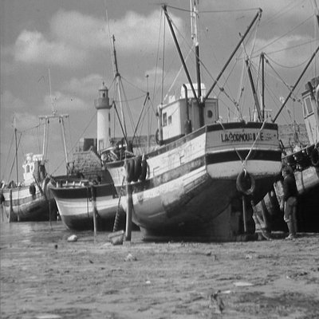

Simulation
A horizontal-path imaging simulator
In astronomy, turbulence sits in a fairly thin layer just above the telescope, so every point in the field of view shares one point spread function (PSF), and a single random phase screen across the aperture is enough to simulate it. Over a horizontal path, turbulence fills the whole distance between the camera and the scene. Almost any object of interest spans more than the isoplanatic angle θ0, the angle over which the blur stays the same, so each part of the image is blurred and shifted differently. This is anisoplanatism, and it breaks image-restoration methods that assume a single PSF.
Our simulator[1],[2] treats the scene as a grid of incoherent point sources sampled at the diffraction limit. Five Kolmogorov phase screens are spaced evenly along the path. Light from each object point passes through its own cone of turbulence on the way to the aperture. The cones overlap near the camera and separate near the scene, so neighboring points share most of their distortion while distant points do not. Summing the phase each point picks up through the screens gives that point its own PSF, and adding up all of the PSFs forms the image.
The number of screens matters. A single screen at mid-path overestimates the isoplanatic angle by 68%; five screens bring the error down to about 19%, roughly one pixel. In point-source tests, the average simulated PSF matched the long-exposure PSF predicted by theory, and the anisoplanatism in the output scaled with turbulence strength as expected[1]. We have also compared theoretical and measured anisoplanatism over a horizontal path[3]. The original MATLAB simulator took about 30 minutes per frame; our Python port runs on a GPU in about 4 seconds per 200 × 200 frame.
| Condition | Cn2 (m−2/3) | r0 (cm) | θ0 (µrad) |
|---|---|---|---|
| Low | 1.0 × 10−14 | 3.02 | 12.9 |
| Moderate | 1.75 × 10−14 | 2.16 | 9.2 |
| Severe | 2.5 × 10−14 | 1.74 | 7.5 |
Simulated frames
One scene, three turbulence strengths
Each clip plays 100 frames, every one through an independent realization of the turbulence, at 15 frames per second. Settings: 12.5 cm aperture, 0.7 µm wavelength, 1 km range, a scene 1 m across, a 200 × 200 detector, and five phase screens.

Error statistics
How far each frame strays from a perfect image
For every simulated frame we compute the mean squared error (MSE) per pixel against a diffraction-limited image of the same scene: the image the camera would form with no turbulence at all. Each frame is first centered on that reference, using the sub-pixel shift that maximizes their cross-correlation, so the MSE measures blur and local warping rather than whole-image wander. Intensities are on the 0–255 scale of the original scene, and a 16-pixel border is excluded. In the original study[1], 1000 frames per condition showed that per-frame MSE follows a log-normal distribution whose mean grows roughly linearly with turbulence strength.
Preliminary. The histograms below use 100 frames per condition from the GPU port, which we are still validating against the original MATLAB simulator.
Per-frame MSE summary (intensity², 0–255 scale). μ and σ are the mean and standard deviation of ln(MSE).
Coming next
We will add scene recovery from these image sequences, building on our work in multiframe blind deconvolution under anisoplanatic conditions[4], and light-field imaging through turbulence.
References
- J. P. Bos and M. C. Roggemann, “Technique for simulating anisoplanatic image formation over long horizontal paths,” Optical Engineering 51(10), 101704 (2012). doi:10.1117/1.OE.51.10.101704
- J. P. Bos and M. C. Roggemann, “Simulation of extended scenes imaged through turbulence over horizontal paths,” Proc. SPIE 8161, Atmospheric Optics IV: Turbulence and Propagation, 816106 (2011). doi:10.1117/12.893869
- J. P. Bos, A. V. Sergeyev, and M. C. Roggemann, “Anisoplanatism over horizontal path: comparison of theoretical and experimental results,” Proc. SPIE 8246, Free-Space Laser Communication Technologies XXIV, 82460N (2012). doi:10.1117/12.906546
- G. Archer, J. P. Bos, and M. C. Roggemann, “Reconstruction of long horizontal-path images under anisoplanatic conditions using multiframe blind deconvolution,” Optical Engineering 52(8), 083108 (2013). doi:10.1117/1.OE.52.8.083108
Credits
Scene: “Boat” (boat.512), USC-SIPI Image Database, Signal and Image Processing Institute, University of Southern California. USC-SIPI lists the original source and copyright status of this image as unknown; it is used here as a standard research test image.
Simulated frames and statistics: the lab's Python/GPU port of the MATLAB horizontal-path simulator described in [1].